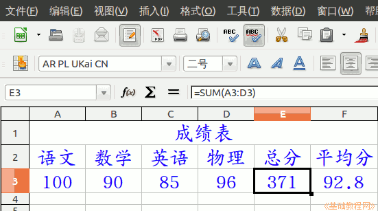

2015-2016 第一学期七年级电子表格和音视频编辑教学设计
作者：TeliuTe 来源：基础教程网
四、 返回目录 下一课
（一）教学设计
1、学习目标：
2、注意事项：绕过弯来，既不要跳也不要落，一楼过了二楼
3、教学过程：
1）教师准备学案和板书；
2）学生整队进入，开机抄黑板上笔记；
3）教师讲解板书演示操作；
4）学生打指法、日志、完成操作；
5）教师打勾记录学生指法成绩，检查日志和操作；
注：学生抄完笔记就开始打指法、日志，老师讲完后再继续完成；
操作图示：

（二）板书设计(学生笔记)、课后记
04学会求和函数
1.函数是复杂的公式
2.点fx，全部，sum，继续
3.框选求和的单元格，确定
4.在编辑栏打勾完成
第4课 学会求和函数
1.函数是复杂的公式，f(x)
2.选中E3，点f(x)，全部，sum，继续
3.框选所有求和的分数，确定
4.编辑栏打勾，平均分Average
--
2016年03月07日 星期一 17:26
--
学生差异表现出来，快的讲完就做完，慢的一节课还在后面
没什么难度，就是不好理解让死记下来操作步骤
--
演示的时候，说一下要检查的内容，两个函数
不知道要检查什么，得慢慢来才是
--
搜狗按shfit后标点自动切换到英文，输入条却没显示
让学生重新切换一下就好了，可能是程序的问题
--
简单了些，大部分学生做的很快
这样说来可以适当地增加内容，学的时候认真听就学得快
返回目录 下一课
本教程由86团学校TeliuTe制作|著作权所有
基础教程网：http://teliute.org/
美丽的校园……
转载和引用本站内容，请保留作者和本站链接。